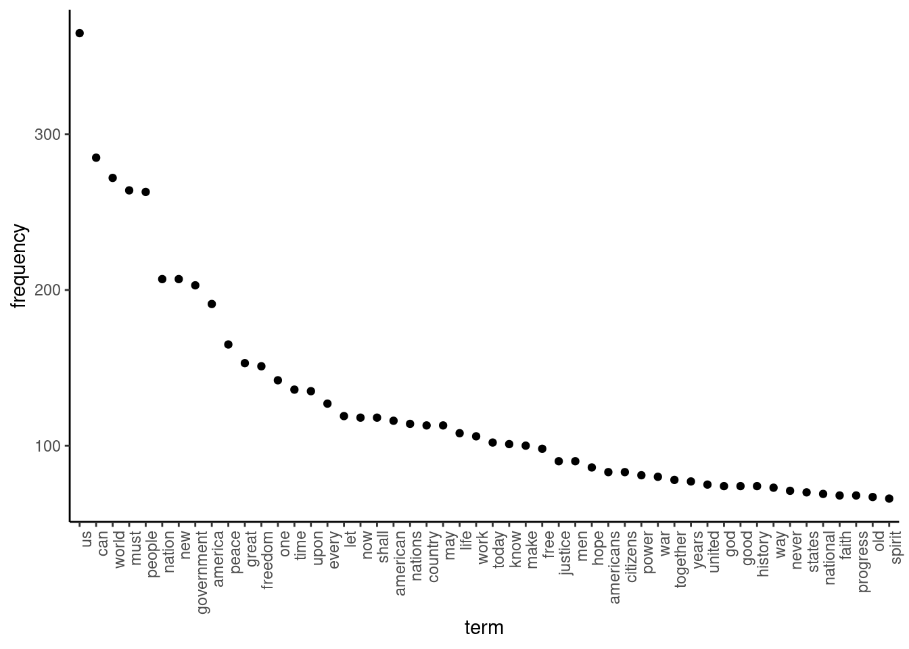
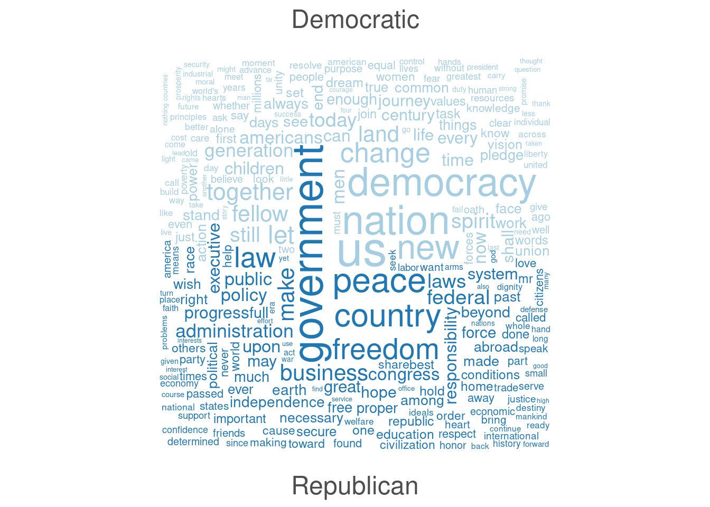
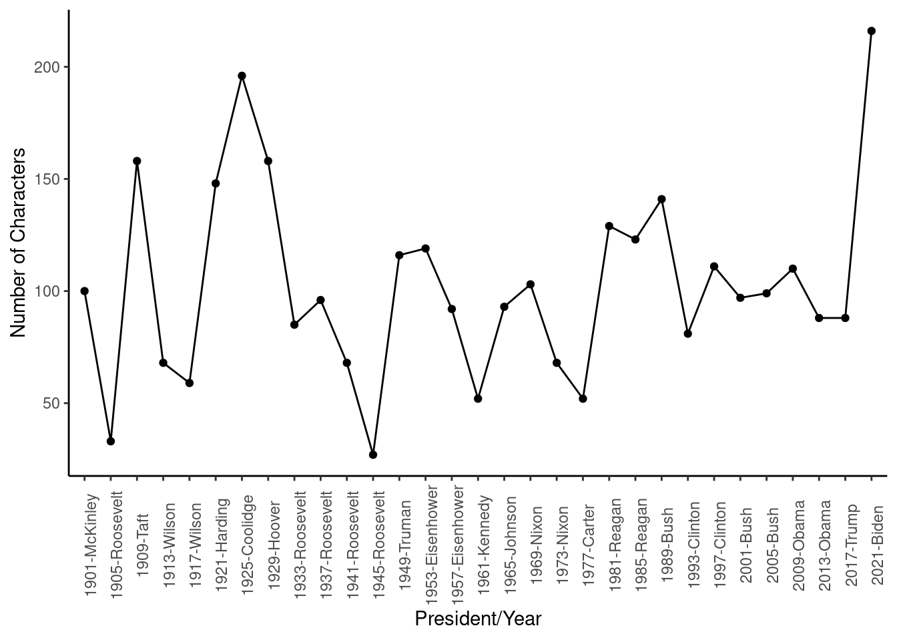
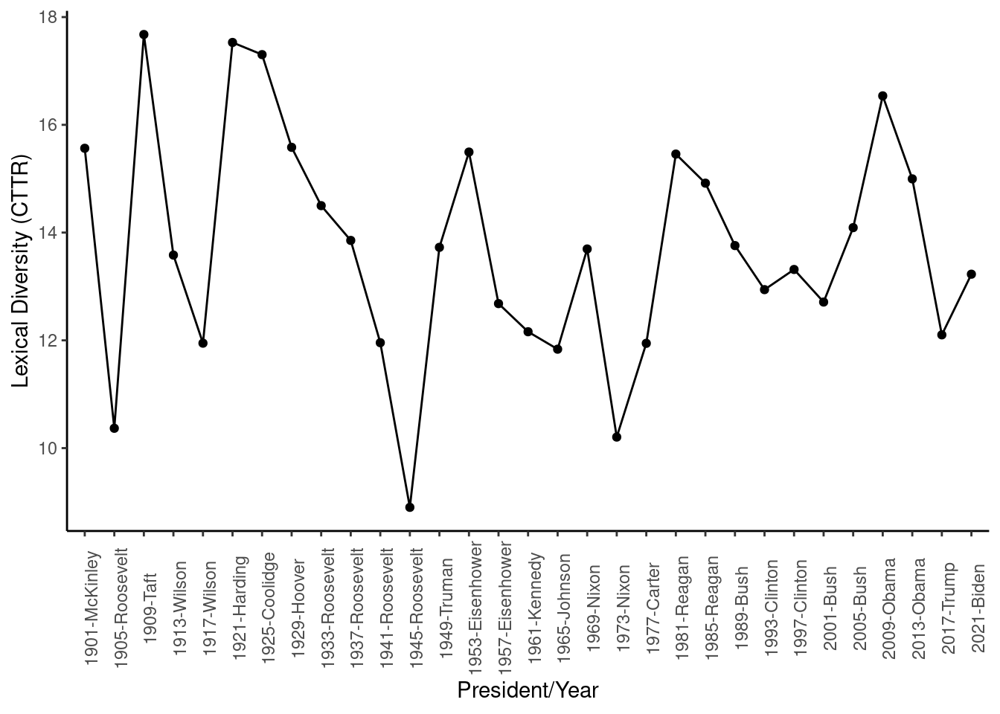
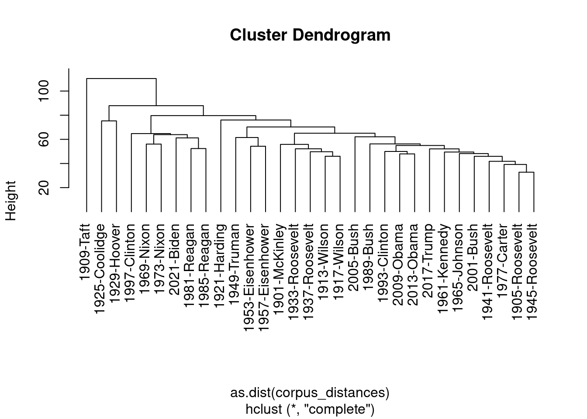

Chapter 5 Preliminaries
Before we start with any kind of analysis, it pays to have a brief look at the preliminaries first. The goal of these preliminaries is to give us a better understanding of what our texts are about, who their authors are, and what we can expect to find in them. This is necessary for us to know our data. Not only is it a standard academic practice to know your data well, but it also helps us to decide if any results we will encounter later on do make sense. Here, we look at three different preliminaries: keywords-in-context, visualisations, and textual statistics. Before that though, we will have a brief look at the idea of the corpus, as it is central to the idea of how quanteda works.
5.1 The Corpus
Within quanteda, the main way to store documents is in the form of a corpus object. This object contains all the information that comes with the texts and does not change during our analysis. Instead, we make copies of the main corpus, change them into the type we need, and run our analyses on them. The advantage of this is that we always can go back to our original data.
Most often our data is in .txt format (as we saw in Chapter 3). If we then set the folder in which we have our texts as our txt_directory, we can read in all our files as such:
txt_directory <- paste0(getwd(), "/Texts")
data_texts <- readtext(paste0(txt_directory, "*"), encoding = "UTF-8")Given that the readtext package is co-authored by those who wrote the quanteda package, we can easily transform the object generated by readtext (which is a simple data-frame with a doc_id and a text column) into a corpus. Note that you can construct such a dataframe yourselves using other methods as well. Just ensure that it has doc_id and text as column names. Then transform it into a corpus:
corpus_texts <- corpus(data_texts)Apart from importing texts ourselves, quanteda contains several corpora as well. Here, we use one of these, which contains the inaugural speeches of all the US Presidents. For this, we first have to load the main package and then load the data into R:
library(quanteda)
data(data_corpus_inaugural)
head(data_corpus_inaugural)## Corpus consisting of 6 documents and 4 docvars.
## 1789-Washington :
## "Fellow-Citizens of the Senate and of the House of Representa..."
##
## 1793-Washington :
## "Fellow citizens, I am again called upon by the voice of my c..."
##
## 1797-Adams :
## "When it was first perceived, in early times, that no middle ..."
##
## 1801-Jefferson :
## "Friends and Fellow Citizens: Called upon to undertake the du..."
##
## 1805-Jefferson :
## "Proceeding, fellow citizens, to that qualification which the..."
##
## 1809-Madison :
## "Unwilling to depart from examples of the most revered author..."You should now see the corpus appear in the Environment tab. If you click on it, you can see, amongst others, that the corpus comes with information on the Year of the release of the speech and the president it belongs to. As the corpus is quite large, we make it a bit more manageable by only selecting the speeches from 1900 onwards. We can do this by using the corpus_subset command for both:
corpus_inaugural <- corpus_subset(data_corpus_inaugural, Year > 1900)Now we have our corpus, we can start with the analysis. As noted, we try not to carry out any analysis on the corpus itself. Instead, we keep it as it is and work on its copies. Often, this means transforming the data into another shape. One of the more popular shapes is the data frequency matrix (dfm). This is a matrix that contains the documents in the rows and the word counts for each word in the columns.
Before we can do so, we have to split up our texts into unique words. To do this, we first have to construct a tokens object. In the command that we use to do this, we can specify how we want to split our texts (here we use the standard option) and how we want to clean our data. For example, we can specify that we want to convert all the texts into lowercase and remove any numbers and special characters.
data_inaugural_tokens <- tokens(
corpus_inaugural,
what = "word",
remove_punct = TRUE,
remove_symbols = TRUE,
remove_numbers = TRUE,
remove_url = TRUE,
remove_separators = TRUE,
split_hyphens = FALSE,
include_docvars = TRUE,
padding = FALSE,
verbose = TRUE
)We can also remove certain stopwords so that words like “and” or “the” do not influence our analysis too much. We can either specify these words ourselves or we can use a list that is already present in R. To see this list, type stopwords("english") in the console. Stopwords for other languages are also available (such as German, French and Spanish). There are even more stopwords in the stopwords package, which works well with quanteda. For now, we will use the English ones. As all the stopwords here are lower-case, we will have to lower case our words as well:
data_inaugural_tokens <- tokens_tolower(data_inaugural_tokens, keep_acronyms = FALSE)
data_inaugural_tokens <- tokens_select(data_inaugural_tokens, stopwords("english"), selection = "remove")Then, we can construct our dfm:
data_inaugural_dfm <- dfm(data_inaugural_tokens)5.2 Keywords in Context
One simple - but effective - way to learn more about our texts is by looking at keywords-in-context (kwic). Here, we look at with which other words a certain word appears in our texts. This is also known as looking at the concordance of our text. To do so is easy with our tokens data frame. Let’s take all those words that start with ‘secure’ and look at which three words occur before and after this word. We can then run:
tokens <- tokens(
corpus_inaugural,
what = "word",
remove_punct = TRUE,
remove_symbols = TRUE,
remove_numbers = TRUE,
remove_url = TRUE,
remove_separators = TRUE,
split_hyphens = FALSE,
include_docvars = TRUE,
padding = FALSE,
verbose = TRUE
)## Creating a tokens object from a corpus input...## ...starting tokenization## ...1901-McKinley to 2021-Biden## ...preserving hyphens## ...preserving social media tags (#, @)## ...segmenting into words## ...7,013 unique types## ...removing separators, punctuation, symbols, numbers, URLs## ...complete, elapsed time: 0.111 seconds.## Finished constructing tokens from 31 documents.kwic_output <- kwic(tokens, pattern = "secure*", valuetype = "glob", window = 3)In the outputted object, we find a column labelled pre and another labelled post. These refer to the words that came either before or after the word ’secure*’. We can easily take these out and combine them:
text_pre <- kwic_output$pre
text_post <- kwic_output$post
text_word <- kwic_output$keyword
text <- as.data.frame(paste(text_pre, text_word, text_post))We then combine this information with the name of the document it came from so that we know which text the word is from:
extracted <- cbind(kwic_output$docname, text)
names(extracted) <- c("docname", "text")
head(extracted)## docname text
## 1 1901-McKinley be adapted to secure a government capable
## 2 1909-Taft however and to secure at the same
## 3 1909-Taft is needed to secure a more rapid
## 4 1909-Taft Act This should secure an adequate revenue
## 5 1909-Taft of business To secure the needed speed
## 6 1909-Taft duties as to secure an adequate income5.3 Visualisations and Descriptives
Another thing we can do is generate various visualisations to understand our data. One interesting thing can be to see which words occur most often. We can do this using the topfeatures function. For this, we first have to save the 50 most frequently occurring words in our texts (note that there is also the textstat_frequency function in the quanteda.textstats helper package that can do this):
features <- topfeatures(data_inaugural_dfm, 50)We then have to transform this object into a data frame, and sort it by decreasing frequency:
features_plot <- data.frame(list(term = names(features),frequency = unname(features)))
features_plot$term <- with(features_plot, reorder(term, -frequency))Then we can plot the results:
library(ggplot2)
ggplot(features_plot) +
geom_point(aes(x=term, y=frequency)) +
theme_classic()+
theme(axis.text.x=element_text(angle=90, hjust=1))
We can also generate word clouds. As these show all the words we have, we will trim our dfm first to remove all those words that occurred less than 30 times. We can do this with the dfm_trim function. Then, we can use this trimmed dfm to generate the word cloud:
library(quanteda.textplots)
wordcloud_dfm_trim <- dfm_trim(data_inaugural_dfm, min_termfreq = 30)
textplot_wordcloud(wordcloud_dfm_trim)If we would want to, we can also split up this word cloud based on which words belong to which party. For this, we have to generate a new dfm and within it, specify the groups that well which words belong to which party. Given that we have only Democratic and Republican presidents, we end up with two groups:
library(quanteda.textplots)
wordcloud_dfm_comp <- dfm_group(data_inaugural_dfm, groups = Party)
wordcloud_dfm_comp <- dfm_trim(wordcloud_dfm_comp, min_termfreq = 20, max_words = 40)
textplot_wordcloud(wordcloud_dfm_comp, comparison = TRUE)
5.4 Text Statistics
Finally, quanteda also allows us to calculate quite some textual statistics. These are all collected in the quanteda.textstats helper package. Here, we will look at several of them, starting with a simple overview of our corpus in the terms of a summary. This tells us the number of characters, sentences, tokens, etc. for each of the texts:
library(quanteda.textstats)
corpus_summary <- textstat_summary(corpus_inaugural)If we want, we can then use this data to make some simple graphs telling us various things about the texts in our corpus. As an example, let’s look at the number of sentences the various presidents put in their speeches:
ggplot(data=corpus_summary, aes(x=document, y=sents, group=1)) +
geom_line()+
geom_point()+
ylab("Number of Characters")+
xlab("President/Year")+
theme_classic()+
theme(axis.text.x = element_text(angle = 90))
Other things we can look at are the readability and lexical diversity of the texts. The former one of these refers to how readable a text is (i.e. how easy or difficult it is to read), while the latter tells us how many different types of words there are in the texts and thus how diverse the text is in word choice and use. Given that there are many ways to calculate both metrics, please have a look at the help file to see which one works best for you. Here, we will use the most popular:
corpus_readability <- textstat_readability(corpus_inaugural, measure = c("Flesch.Kincaid", "Dale.Chall.old"))
corpus_lexdiv <- textstat_lexdiv(data_inaugural_tokens, c("CTTR", "TTR", "MATTR"), MATTR_window = 100)As before, we can plot this data in a graph to see how lexical diversity developed over time:
ggplot(data=corpus_lexdiv, aes(x=document, y=CTTR, group=1)) +
geom_line()+
geom_point()+
ylab("Lexical Diversity (CTTR)")+
xlab("President/Year")+
theme_classic()+
theme(axis.text.x = element_text(angle = 90))
Another thing we can do is look at the similarities and distances between documents. With this, we can answer questions such as: how different are these documents from each other? And if different (or similar), how different (or similar)? The idea is that the larger the similarity is, the smaller the distance is as well. A good way to understand the idea of similarity is to consider how many operations you need to perform to change one text into the other. The more “replace” options you have to carry out, the more different the text. As for the distances, it is best to consider the texts as having positions on a Cartesian plane (with positions based on their word counts). The distance between these two points (either Euclidean, Manhattan or other) is then the distance between the texts.
Let’s start with a look at these similarities (note again that there are many different methods to calculate this):
corpus_similarties <- textstat_simil(data_inaugural_dfm, method = "correlation", margin = "documents")
corpus_similarties <- as.data.frame(corpus_similarties)A brief look at these results tells us that the 1981 and 1985 Reagan speeches show the highest degree of similarity, while the
1945 Roosevelt and 2017 Trump speeches are the most different. Note that while we look here at the documents, we could also look at individual words (set margin="features). For now, let us look at the distances between the documents, choosing the Euclidean distance between the documents as our metric:
corpus_distances <- textstat_dist(data_inaugural_dfm, margin = "documents", method = "euclidean")
corpus_distances_df <- as.data.frame(corpus_distances)Here, we find the 1905 and 1945 Roosevelt speeches (the two different Roosevelts) to be the closest, and the 1909 Taft and 1997 Clinton speeches to be furthest apart. If we want to, we can even convert this data into a dendrogram. We do this by taking the information on the distances out of the corpus_distances object, make them into a triangular matrix, and plot them:
plot(hclust(as.dist(corpus_distances)), hang = -1)
Here, we can see that - amongst others - the 1909 Taft speech is the ‘farthest’ away from all the others. Also, while the 1981 and 1985 Reagan speeches were very close, the 1997 Clinton speech was closer to Nixon’s speeches than his 1993 speech (which was close to the 2009 and 2013 Obama speeches).
Finally, let us look at the entropy of our texts. The entropy of a document measures the ‘amount’ of information each letter of the text produces. To get an idea of what this means, consider the ‘e’ is an often occurring letter in an English text, while ‘z’ is not. Thus, a word with a ‘z’ in it, it more unique and thus likely to carry unique and interesting information. The ‘higher’ the entropy of a text, the less ‘information’ is in it:
corpus_entropy_docs <- textstat_entropy(data_inaugural_dfm, "documents")
corpus_entropy_docs <- as.data.frame(corpus_entropy_docs)As we can see, the Roosevelt speeches had the lowest entropies, while the 1909 Taft and 1925 Coolidge speeches were the highest (in relative terms). While not as common as the other distance metrics, entropy is sometimes used to measure the similarity between texts. Thus, it can be useful if we want to know the importance of certain words. This is because if a certain word is not important, we could consider it to be a stop word:
corpus_entropy_feats <- textstat_entropy(data_inaugural_dfm, "features")
corpus_entropy_feats <- as.data.frame(corpus_entropy_feats)
corpus_entropy_feats <- corpus_entropy_feats[order(-corpus_entropy_feats$entropy),]
head(corpus_entropy_feats, 10)## feature entropy
## 164 people 4.766391
## 488 life 4.747627
## 385 nation 4.737440
## 5 great 4.654392
## 114 can 4.651396
## 317 future 4.639222
## 197 world 4.616910
## 212 time 4.616614
## 402 must 4.610073
## 231 god 4.601430Looking at the data, we find that ‘people’, ‘life’ and ‘nation’ have pretty high entropies. This indicates that the words added little to the information of the documents, and would-be candidates for removal from our corpus.